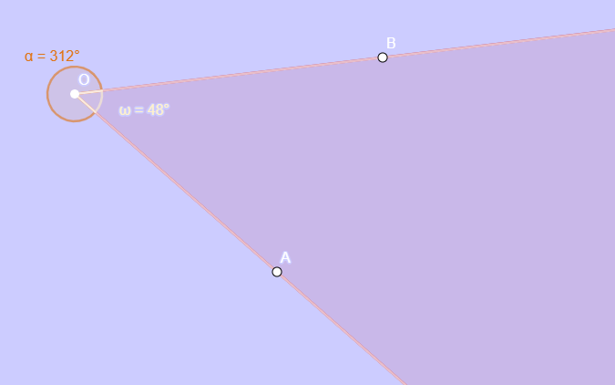
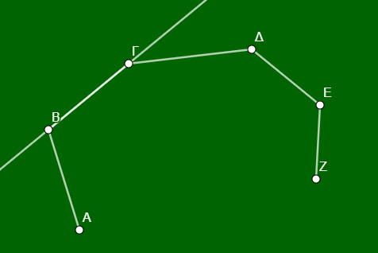
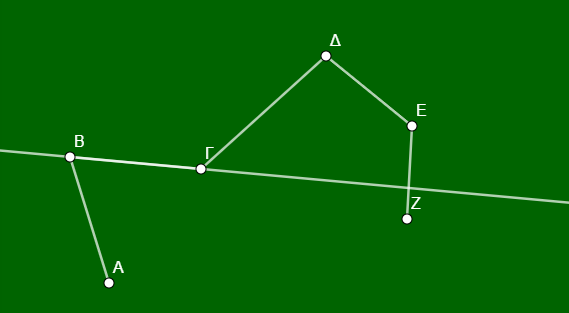
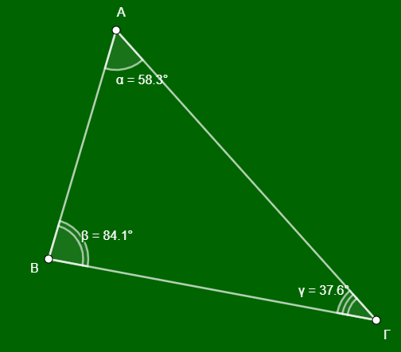
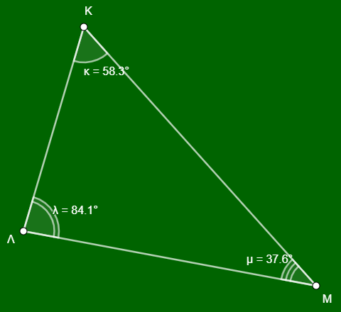

Η έννοια της γωνίας αποτελεί θεμελιώδες στοιχείο της Γεωμετρίας, επιτρέποντας τη μελέτη των τριγώνων, των πολυγώνων και του κύκλου. Ακολουθεί μια αναλυτική παρουσίαση της θεωρίας και ενδεικτικές ασκήσεις βασισμένες στις πηγές.
1 Θεωρία Γωνιών
1.0.1 Ορισμός και Στοιχεία
Γωνία ονομάζεται το γεωμετρικό σχήμα που σχηματίζεται από δύο ημιευθείες με κοινή αρχή.
* Κορυφή: Η κοινή αρχή των ημιευθειών (π.χ. το σημείο Ο).
* Πλευρές: Οι δύο ημιευθείες που σχηματίζουν τη γωνία (π.χ. Οχ και Οy).
* Συμβολισμός: Συμβολίζεται με τρία κεφαλαία γράμματα, όπου το μεσαίο είναι η κορυφή (π.χ. \(\widehat{AOB}\)), ή με ένα μικρό γράμμα στο εσωτερικό της (π.χ. \(\hat{\omega}\)).

1.0.2 Κυρτή και Μη Κυρτή Γωνία
- Κυρτή γωνία: Όταν από ένα σημείο Ο φέρουμε δύο ημιευθείες Οχ και Οy, τότε σχηματίζονται δύο γωνίες. Η μικρότερη απο αυτές (σχ. 1 : η \(\hat ω\) είναι κυρτή γωνία και η μεγαλύτερη (σχ. 1: η \(\hatα\) είναι η μή κυρτή. Στα κυρτά πολύγωνα, όλες οι εσωτερικές γωνίες είναι μικρότερες από 180°.Μια μη κυρτή γωνία είναι μεγαλύτερη από μια ευθεία γωνία (180°) αλλά μικρότερη από μια πλήρη γωνία (360°).
- Παρόμοια μπορούμε να πούμε ότι μια τεθλασμένη γραμμή είναι κυρτή αν κάθε ευθεία που περνάει από μια πλευρά της αφήνει όλο το σχήμα απο την μια μεριά

διαφορετικά είναι μη κυρτή.

1.0.3 2. Σχέσεις Γωνιών και Πλευρών σε Τρίγωνο
Σε ένα τρίγωνο (π.χ. ΑΒΓ), οι γωνίες και οι πλευρές συνδέονται με τους εξής όρους:
* Περιεχομένη γωνία: Είναι η γωνία που σχηματίζεται μεταξύ δύο πλευρών.

Για παράδειγμα, η γωνία \(\widehat{A}\) περιέχεται στις πλευρές ΑΒ και ΑΓ. Αντίστοιχα, η γωνία που βρίσκεται μεταξύ των πλευρών ΑΒ και ΒΓ είναι η \(\widehat{B}\).
* Προσκείμενη γωνία: Είναι οι γωνίες που “βρίσκονται” πάνω σε μια πλευρά, δηλαδή έχουν τη μία τους πλευρά πάνω στο ευθύγραμμο τμήμα της πλευράς αυτής. Για παράδειγμα, οι γωνίες \(\widehat{B}\) και \(\widehat{\Gamma}\) είναι προσκείμενες στην πλευρά ΒΓ.
* Απέναντι γωνία: Είναι η γωνία που βρίσκεται απέναντι από μια συγκεκριμένη πλευρά. Για παράδειγμα, η γωνία \(\widehat{A}\) βρίσκεται απέναντι από την πλευρά ΒΓ. Αντίστοιχα, η πλευρά που βρίσκεται απέναντι από τη γωνία \(\widehat{\Gamma}\) είναι η ΑΒ.
1.1 Ασκήσεις και Εφαρμογές
Άσκηση 1 (Συμπλήρωση Κενών): Στο τρίγωνο ΚΛΜ:

1. Η περιεχόμενη γωνία των πλευρών ΛΚ και ΛΜ είναι η γωνία ………..
2. Η πλευρά ΛΜ έχει απέναντι γωνία την ………..
3. Οι προσκείμενες γωνίες της πλευράς ΛΚ είναι οι ………. και ………..
4. Η γωνία \(\widehat{M}\) περιέχεται στις πλευρές ………. και ………..
* (Λύσεις: 1. \(\widehat{\Lambda}\), 2. \(\widehat{K}\), 3. \(\widehat{K}\) και \(\widehat{\Lambda}\), 4. ΜΚ και ΜΛ).
Άσκηση 2 (Αναγνώριση σε Σχήμα): Σε ένα τρίγωνο ΑΒΓ, (σχεδιάστε το τρίγωνο) βρείτε:
1. Ποια γωνία του τριγώνου περιέχεται στις πλευρές ΑΒ και ΓΑ;
2. Ποια πλευρά είναι απέναντι από τη γωνία \(\widehat{B}\);
3. Ποιες γωνίες είναι προσκείμενες στην πλευρά ΓΒ;
* (Απαντήσεις: 1. Η \(\widehat{A}\), 2. Η πλευρά ΑΓ, 3. Οι γωνίες \(\widehat{B}\) και \(\widehat{\Gamma}\)).
Άσκηση 3 (Σωστό/Λάθος):
1. Μια τεθλασμένη γραμμή ονομάζεται κυρτή όταν η προέκταση κάθε πλευράς της αφήνει όλες τις άλλες πλευρές της στο ίδιο ημιεπίπεδο. (Σ).
2. Σε ένα ισοσκελές τρίγωνο, οι προσκείμενες στη βάση γωνίες είναι άνισες. (Λ).
3. Μια μη κυρτή γωνία είναι πάντα μικρότερη από μια ορθή γωνία. (Λ).
4. Η γωνία που περιέχεται στις κάθετες πλευρές ενός ορθογωνίου τριγώνου είναι 90°. (Σ).
Άσκηση 4 (Σύγκριση): Δίνονται τρεις γωνίες: μία οξεία, μία ορθή και μία αμβλεία. Ποια είναι η μεγαλύτερη και ποια η μικρότερη;
* Απάντηση: Μεγαλύτερη είναι η αμβλεία και μικρότερη η οξεία.
Άσκηση 5 (Κατασκευή): Σχεδιάστε μια κυρτή γωνία 120° και ονομάστε την \(\widehat{AOB}\). Στη συνέχεια, σκιάστε την αντίστοιχη μη κυρτή γωνία.
1.1.1 2. Ταξινόμηση Γωνιών βάσει Μέτρου
Οι γωνίες ταξινομούνται ανάλογα με το άνοιγμά τους σε σχέση με την ορθή γωνία (90°):
| Είδος Γωνίας | Μέτρο (\(\phi\)) | Περιγραφή |
|---|---|---|
| Μηδενική | \(\phi = 0^\circ\) | Οι πλευρές συμπίπτουν. |
| Οξεία | \(0^\circ < \phi < 90^\circ\) | Μικρότερη από την ορθή. |
| Ορθή | \(\phi = 90^\circ\) | Οι πλευρές είναι κάθετες μεταξύ τους. |
| Αμβλεία | \(90^\circ < \phi < 180^\circ\) | Μεγαλύτερη από την ορθή, μικρότερη από την ευθεία. |
| Ευθεία | \(\phi = 180^\circ\) | Οι πλευρές είναι αντικείμενες ημιευθείες. |
| Πλήρης | \(\phi = 360^\circ\) | Οι πλευρές συμπίπτουν μετά από πλήρη περιστροφή. |
1.2 Θεωρία Ευθυγράμμων Σχημάτων
Ορισμός: Το ευθύγραμμο σχήμα (ή πολύγωνο) ορίζεται ως το σχήμα που σχηματίζεται από μια κλειστή τεθλασμένη γραμμή, της οποίας οι πλευρές τέμνονται μόνο σε σημεία που αποτελούν κορυφές του.
Στοιχεία: Τα πολύγωνα αποτελούνται από πλευρές και κορυφές. Ο αριθμός των κορυφών ή των πλευρών καθορίζει την ονομασία τους:
Τρίγωνο: 3 κορυφές.
Τετράπλευρο: 4 κορυφές.
Πεντάγωνο: 5 κορυφές.
Εξάγωνο: 6 κορυφές.
*Κανονικό Πολύγωνο: Ονομάζεται το πολύγωνο που έχει όλες τις πλευρές του ίσες και όλες τις γωνίες του ίσες.
Περίμετρος (Π): Είναι το άθροισμα των μηκών όλων των πλευρών του πολυγώνου.
1.3 Θεωρία Ίσων Σχημάτων
Ορισμός Ισότητας: Δύο ευθύγραμμα σχήματα ονομάζονται ίσα όταν, αν τοποθετηθούν το ένα πάνω στο άλλο με κατάλληλη μετατόπιση ή στροφή, συμπίπτουν.
Αντίστοιχα Στοιχεία: Στα ίσα σχήματα, όλες οι αντίστοιχες πλευρές και γωνίες (καθώς και οι διαγώνιοι) είναι ίσες μία προς μία.
1.4 Ασκήσεις και Εφαρμογές
Άσκηση 1 (Συμπλήρωση Κενών):
Δύο ευθύγραμμα σχήματα λέγονται ίσα αν ……………….. όταν τοποθετήσουμε το ένα ………………...
Οι αντίστοιχες πλευρές και γωνίες των ίσων σχημάτων είναι ………………...
Ένα πολύγωνο ονομάζεται κανονικό, όταν έχει όλες τις ……………….. του ίσες και όλες τις ……………….. του ίσες.
- (Λύσεις: 1. συμπίπτουν, πάνω στο άλλο, 2. ίσες, 3. πλευρές, γωνίες).
Άσκηση 2 (Περίμετρος): Να βρεθεί η περίμετρος ενός τριγώνου με πλευρές 2,3 dm, 45 mm και 5 cm.
- Λύση: Πρέπει πρώτα να μετατρέψουμε όλες τις μονάδες σε εκατοστά (cm): 2,3 dm = 23 cm και 45 mm = 4,5 cm. Περίμετρος Π = 23 + 4,5 + 5 = 32,5 cm.
Άσκηση 3 (Γεωμετρική Αναγνώριση): Σε ένα παραλληλόγραμμο ΑΒΓΔ, αν η περίμετρος είναι 20 cm και η πλευρά ΑΒ είναι 5 cm, να βρεθούν οι υπόλοιπες πλευρές.
- Λύση: Στο παραλληλόγραμμο οι απέναντι πλευρές είναι ίσες, άρα ΓΔ = ΑΒ = 5 cm. Το άθροισμα των άλλων δύο ίσων πλευρών (ΑΔ + ΒΓ) είναι 20 - (5 + 5) = 10 cm, άρα ΑΔ = ΒΓ = 5 cm (Στην περίπτωση αυτή το σχήμα είναι ρόμβος).
- Πολλαπλασιασμός δυνάμεων με την ίδια βάση: \(α^μ \cdot α^ν = α^{μ+ν}\).
- Διαίρεση δυνάμεων με την ίδια βάση: \(α^μ : α^ν = α^{μ-ν}\).
- Δύναμη γινομένου: \((α \cdot β)^ν = α^ν \cdot β^ν\).
- Δύναμη πηλίκου: \((\frac{α}{β})^ν = \frac{α^ν}{β^ν}\).
- Δύναμη δύναμης: \((α^μ)^ν = α^{μ \cdot ν}\).